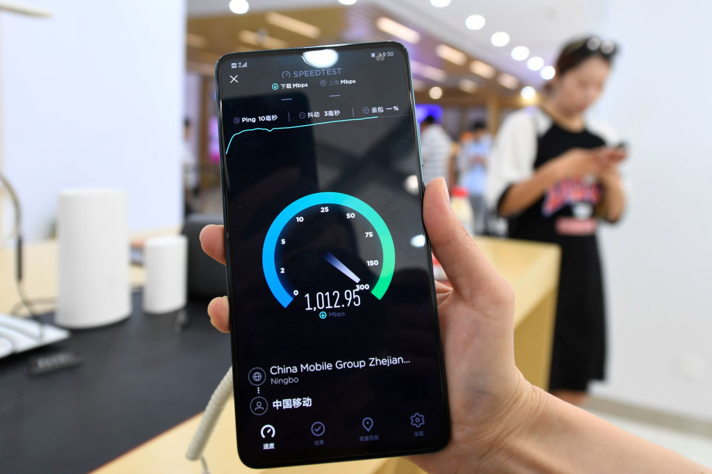
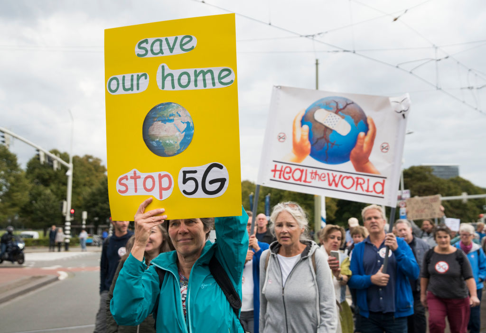

ПЯТАЯ ГЕНЕРАЦИЯ: 10 ФАКТОВ О 5G
Пятое поколение беспроводной связи — нечто большее, чем просто быстрый интернет в кармане. Возможно, эта технология изменит мир до неузнаваемости.
5G — аббревиатура от английского fifth generation, «пятое поколение», то есть следующее за существующими стандартами телекоммуникаций 4G. C приходом этой технологии эксперты обещают ускорение мобильной передачи данных — в сотню раз быстрее, чем у 4G. На практике для обычного пользователя это означает, что фильм в формате Ultra HD можно будет скачать за секунду-другую. Но главное, конечно, не это, а то, что c 5G можно будет автоматизировать то, что раньше доверяли только человеку. Автономные автомобили смогут ездить по городу, моментально анализируя дорожную ситуацию. Все приборы в «умном доме» смогут общаться между собой. Станет бесперебойной связь в реальном времени в районах природных катастроф. Ученые сулят даже совсем уж невероятные вещи вроде дистанционной роботизированной хирургии.
Еще одно обещанное преимущество 5G — поддержка миллионов устройств на квадратный километр. Это важно для операторов, потому что плотность населения в городах велика и местами продолжает интенсивно расти. При этом все хотят высокоскоростной интернет, а 3G и 4G уже не справляются с этой нагрузкой. Еще в городах и между городами растет количество высокоскоростных автомобильных и железнодорожных магистралей. На скорости до 200 км/ч 4G еще работает, но в сетях 5G заложена возможность высокоскоростного доступа в интернет на скоростях до 500 км/ч. Некоторые современные поезда движутся ненамного медленнее.
А еще разработчики 5G обещают пользователям значительно более низкие энергозатраты, чем в 4G. Это значит, что аккумулятор телефона будет разряжаться гораздо медленнее, несмотря на огромные скорости работы устройства и высокое качество контента.
В основе «философии» 5G лежит так называемый интернет вещей. Это технология, объединяющая в единую сеть периферийные устройства, например датчики, и центры обработки информации, где собранные данные анализируются. После обработки сведений выдаются команды другим устройствам. Например, при утечке газа или задымлении сигнал передается в соответствующие службы. При этом кофеварка готовит свежий кофе, а тостер поджаривает хлеб, пока хозяин дома принимает утренний душ — почти как Рей Брэдбери в свое время описал. Само собой, это преобразит мировую экономику, в этом сомневаться не приходится. Эксперты говорят о триллионах долларов новых ежегодных продаж, обеспеченных 5G.
А вот японцы хотят с помощью 5G отслеживать самочувствие дойных коров. Это должно упростить жизнь фермерам, особенно начинающим. В большом стаде уследить за молочными коровами бывает нелегко. При первых признаках мастита нужно начинать лечение, чтобы болезнь не усугубилась. Также важно не пропустить время, когда корову нужно искусственно осеменить — это возможно лишь в течение суток раз в три недели. Будущая система будет передавать фотографии с камер в коровниках в модуль обработки данных, а фермер всю эту информацию будет получать на экран смартфона.
О планах развития 5G объявили тогда, когда и о 4G еще не все слышали, — в 2014 году. В 2018-м начали запускать пробные сети в разных странах. первое коммерческое сплошное покрытие организовали в Южной Корее год назад. Эксперимент оказался не вполне удачным: многие пользователи критиковали качество связи, говоря, что на деле 5G-сервисы оказались не такими быстрыми и надежными, как в рекламе. Тем временем 5G запустили в ряде городов Китая, в США, Швейцарии. Все пробные запуски и замеры, конечно же, широко освещались в СМИ. Специалисты компании Ericsson объявили, что на конец прошлого года в мире около 13 млн человеку уже опробовали сети пятого поколения.
В России первые опыты начались в 2018-м. Есть пример покрытия сетью 5G целого небольшого города — Кронштадта, ныне это отдаленный район Санкт-Петербурга. Тесты проводили в Эрмитаже, а в Москве — в Сколково, в деловом центре Москва-Сити и возле мэрии, на Тверской улице от Кремля до Садового кольца, а также в некоторых регионах, например в Татарстане.
Операторы много раз заявляли, что хотели бы тестировать и настраивать 5G оборудование для работы в так называемом золотом диапазоне 3,4–3,8 ГГц. На средних частотах 2–6 ГГц, куда входит и этот диапазон, сигнал стабильнее, а скорость передачи данных выше. Для 5G этот сегмент оптимален, и в Европе коммерческие сети используют именно его. В России частоты диапазона 3,4–3,8 ГГц в настоящее время используют силовые ведомства и спецсвязь.
Перспектива распространения 5G уже не первый год волнует активистов из разных стран. Они тревожатся из-за потенциально вредного воздействия технологии на организм человека: на нервную и репродуктивную системы и не только. Описывались случаи странного поведения животных, птиц и насекомых в районах, где испытывали новый стандарт связи. Любопытно, что у страховых компаний нет единого мнения на этот счет, и многие из них пока отказываются страховать ответственность телекоммуникационных корпораций в случае подачи против них исков о нанесении вреда здоровью из-за 5G. Внятных научных публикаций на эту тему тоже пока нет. В перспективе могут возникнуть и другие проблемы. Например, массовое распространение приборов с сетевым подключением крайне удобно для разного рода хакерских атак.
Хотя многие зарубежные операторы уже запустили коммерческие сети 5G, в данный момент это не более чем развлечение, и до использования всего потенциала стандарта еще далеко. Россия в этом плане отстает существенно, но в этом есть свои плюсы. Пока же главными отечественными информационными поводами по части 5G остаются новые и новые удачные тесты.
Фото: Getty Images
Комментарии